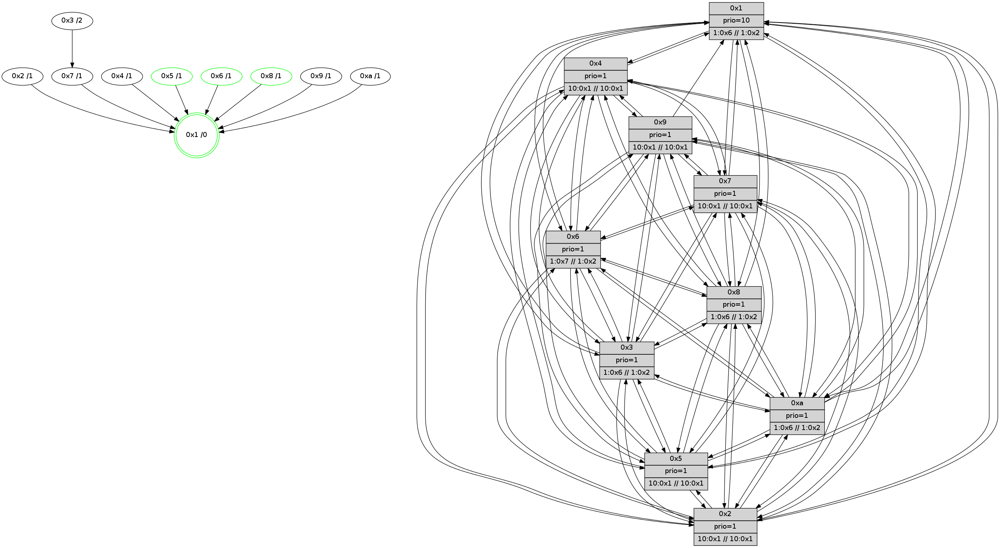

>> << IDX [start] -100 -25 -5 +0 +5 +25 +100 [615.170773029]
 Previous packets
----------------------------------------------------------------------
610.441986 beacon01(faad) #0 coord=01,02,03,04,05,06,07,0a,09,08 cycle=688.0ms assoc
-- color-indic=1 64 2a cb
610.451968 beacon02(faad) #0 coord=01,02,03,04,05,06,07,0a,09,08 cycle=688.0ms assoc 64 b9 fa
610.461969 beacon03(faad) #0 coord=01,02,03,04,05,06,07,0a,09,08 cycle=688.0ms assoc 64 c3 b7
610.471968 beacon04(faad) #0 coord=01,02,03,04,05,06,07,0a,09,08 cycle=688.0ms assoc 64 b4 5d
610.481969 beacon05(faad) #0 coord=01,02,03,04,05,06,07,0a,09,08 cycle=688.0ms assoc 64 ce 10
610.491969 beacon06(faad) #0 coord=01,02,03,04,05,06,07,0a,09,08 cycle=688.0ms assoc 64 40 c7
610.501970 beacon07(faad) #0 coord=01,02,03,04,05,06,07,0a,09,08 cycle=688.0ms assoc 64 3a 8a
610.511974 beacon0a(faad) #0 coord=01,02,03,04,05,06,07,0a,09,08 cycle=688.0ms assoc 64 4b 81
610.521975 beacon09(faad) #0 coord=01,02,03,04,05,06,07,0a,09,08 cycle=688.0ms assoc 64 c5 56
610.531976 beacon08(faad) #0 coord=01,02,03,04,05,06,07,0a,09,08 cycle=688.0ms assoc 64 bf 1b
610.543457 [Hello(2): seq=389 sym=4,5,7,6,3,9,8,10,1 sysInfo=hasWarning stat=4:2,12,12,3/5:13,15,9,4/7:4,0,14,3/6:8,8,14,4/3:10,11,6,1/9:5,5,9,1/8:12,1,7,3/10:6,1,9,3/1:1,3,1,0]
610.546191 [Color(3) seq=72 @0:0 prio=1 >1.@6,1.@7,1.@8,1.@9 >>1.@2,1.@3,1.@4]
610.548148 [Hello(1): seq=301 sym=4,2,5,10,3,8,6,7 sysInfo=coloring-mode-on,ColoringModeRequestCalled stat=4:4,14,1,6/2:5,8,1,7/5:14,10,2,7/10:12,13,3,6/3:3,5,7,8/8:7,1,7,5/6:14,12,4,4/7:6,4,6,7]
610.550444 [Hello(7): seq=392 sym=2,3,5,6,4,8,9,10,1 sysInfo= stat=2:3,9,1,8/3:15,2,0,7/5:1,3,14,8/6:3,4,0,0/4:3,11,15,5/8:14,8,1,4/9:9,13,1,7/10:2,3,0,6/1:11,13,7,0]
610.553597 [Color(7) seq=60 @0:0 prio=1 >10.@1,1.@4,1.@6,1.@8 >>10.@1,1.@2,1.@3]
610.556026 [Hello(6): seq=392 sym=2,3,5,4,9,8,10,1 sysInfo=coloring-mode-on,ColoringModeIndicationCalled stat=2:13,15,3,5/3:4,4,15,5/5:5,3,14,7/4:0,2,14,6/9:15,2,1,6/8:5,0,14,5/10:7,5,2,5/1:12,1,5,0]
610.558921 [Color(5) seq=56 @0:0 prio=1 >10.@1,1.@4,1.@6,1.@7 >>10.@1,1.@2,1.@3]
----------------------------------------------------------------------
611.230116 beacon01(faad) #0 coord=01,02,03,04,05,06,07,0a,09,08 cycle=688.0ms assoc
-- color-indic=1 64 96 ce
611.240098 beacon02(faad) #0 coord=01,02,03,04,05,06,07,0a,09,08 cycle=688.0ms assoc 64 05 ff
611.250097 beacon03(faad) #0 coord=01,02,03,04,05,06,07,0a,09,08 cycle=688.0ms assoc 64 7f b2
611.260099 beacon04(faad) #0 coord=01,02,03,04,05,06,07,0a,09,08 cycle=688.0ms assoc 64 08 58
611.270099 beacon05(faad) #0 coord=01,02,03,04,05,06,07,0a,09,08 cycle=688.0ms assoc 64 72 15
611.280099 beacon06(faad) #0 coord=01,02,03,04,05,06,07,0a,09,08 cycle=688.0ms assoc 64 fc c2
611.290098 beacon07(faad) #0 coord=01,02,03,04,05,06,07,0a,09,08 cycle=688.0ms assoc 64 86 8f
611.300105 beacon0a(faad) #0 coord=01,02,03,04,05,06,07,0a,09,08 cycle=688.0ms assoc 64 f7 84
611.310105 beacon09(faad) #0 coord=01,02,03,04,05,06,07,0a,09,08 cycle=688.0ms assoc 64 79 53
611.320104 beacon08(faad) #0 coord=01,02,03,04,05,06,07,0a,09,08 cycle=688.0ms assoc 64 03 1e
611.331293 [Hello(4): seq=393 sym=5,7,6,2,3,9,8,10,1 sysInfo= stat=5:13,3,11,6/7:7,3,14,2/6:13,9,14,5/2:6,7,10,6/3:1,10,4,2/9:2,13,10,3/8:9,9,14,6/10:15,0,13,5/1:4,7,9,0]
611.333708 [Hello(8): seq=336 sym=5,2,3,4,7,6,9,10,1 sysInfo=coloring-mode-on,ColoringModeIndicationCalled stat=5:9,13,11,5/2:9,14,2,0/3:1,1,11,6/4:7,5,13,5/7:11,10,15,4/6:6,9,12,5/9:0,4,15,4/10:12,13,10,5/1:13,9,9,0]
611.337172 [Hello(10): seq=325 sym=6,2,3,8,9,5,7,4,1 sysInfo= stat=6:7,9,0,0/2:7,14,3,1/3:1,0,3,1/8:5,3,12,5/9:2,5,10,3/5:6,12,8,5/7:0,10,11,2/4:0,6,8,6/1:5,3,7,0]
611.341753 [Hello(9): seq=336 sym=5,2,3,4,7,6,8,10,1 sysInfo=hasWarning stat=5:10,12,10,6/2:0,6,14,5/3:10,9,9,4/4:13,3,11,5/7:0,12,15,2/6:9,2,12,4/8:5,5,1,1/10:8,8,12,6/1:15,6,8,0]
611.345492 [Hello(5): seq=393 sym=7,6,4,3,1,9,8,10,2 sysInfo= stat=7:14,8,1,3/6:2,5,0,4/4:10,5,10,4/3:6,13,7,2/1:7,10,7,0/9:7,9,12,3/8:8,11,8,4/10:7,15,13,4/2:1,12,11,3]
611.348820 [Color(1) seq=73 @0:0 prio=10 >1.@6,1.@7,1.@8,1.@9 >>1.@2,1.@3,1.@4]
611.355544 [Hello(3): seq=393 sym=1,7,6,2,4,8,9,10,5 sysInfo=coloring-mode-on,ColoringModeIndicationCalled stat=1:8,12,10,0/7:15,0,10,3/6:8,3,9,5/2:14,6,11,7/4:12,3,11,4/8:11,3,8,1/9:1,5,15,5/10:14,5,9,4/5:15,11,12,5]
----------------------------------------------------------------------
612.018246 beacon01(faad) #0 coord=01,02,03,04,05,06,07,0a,09,08 cycle=688.0ms assoc
-- color-indic=1 64 52 c0
612.028229 beacon02(faad) #0 coord=01,02,03,04,05,06,07,0a,09,08 cycle=688.0ms assoc 64 c1 f1
612.038229 beacon03(faad) #0 coord=01,02,03,04,05,06,07,0a,09,08 cycle=688.0ms assoc 64 bb bc
612.048230 beacon04(faad) #0 coord=01,02,03,04,05,06,07,0a,09,08 cycle=688.0ms assoc 64 cc 56
612.058228 beacon05(faad) #0 coord=01,02,03,04,05,06,07,0a,09,08 cycle=688.0ms assoc 64 b6 1b
612.068229 beacon06(faad) #0 coord=01,02,03,04,05,06,07,0a,09,08 cycle=688.0ms assoc 64 38 cc
612.078229 beacon07(faad) #0 coord=01,02,03,04,05,06,07,0a,09,08 cycle=688.0ms assoc 64 42 81
612.088234 beacon0a(faad) #0 coord=01,02,03,04,05,06,07,0a,09,08 cycle=688.0ms assoc 64 33 8a
612.098233 beacon09(faad) #0 coord=01,02,03,04,05,06,07,0a,09,08 cycle=688.0ms assoc 64 bd 5d
612.108234 beacon08(faad) #0 coord=01,02,03,04,05,06,07,0a,09,08 cycle=688.0ms assoc 64 c7 10
612.120370 [Hello(2): seq=390 sym=4,5,7,6,3,9,8,10,1 sysInfo=hasWarning stat=4:3,12,12,3/5:14,0,9,4/7:4,1,14,3/6:9,9,14,4/3:11,12,6,1/9:6,5,9,1/8:12,1,7,3/10:7,1,9,3/1:2,4,1,0]
612.123106 [Hello(6): seq=393 sym=2,3,5,4,9,8,10,1 sysInfo=coloring-mode-on,ColoringModeIndicationCalled stat=2:14,15,3,5/3:5,4,15,5/5:6,3,14,7/4:1,2,14,6/9:0,2,1,6/8:5,0,14,5/10:8,5,2,5/1:12,2,5,0]
612.125825 [Color(6) seq=73 @0:0 prio=1 >1.@7,1.@8,1.@9,1.@a >>1.@2,1.@3,1.@4]
612.128346 [Hello(7): seq=393 sym=2,3,5,6,4,8,9,10,1 sysInfo= stat=2:4,9,1,8/3:0,2,0,7/5:2,4,14,8/6:4,5,0,0/4:4,11,15,5/8:14,8,1,4/9:10,13,1,7/10:3,3,0,6/1:11,14,7,0]
612.131165 [Color(7) seq=61 @0:0 prio=1 >10.@1,1.@4,1.@6,1.@8 >>10.@1,1.@2,1.@3]
612.133443 [Hello(1): seq=302 sym=4,2,5,10,3,8,6,7 sysInfo=coloring-mode-on,ColoringModeRequestCalled stat=4:5,14,1,6/2:5,8,1,7/5:14,11,2,7/10:12,13,3,6/3:4,5,7,8/8:7,1,7,5/6:15,13,4,4/7:7,5,6,7]
612.135970 [Color(8) seq=73 @0:0 prio=1 >1.@6,1.@7,1.@9,1.@a >>1.@2,1.@3,1.@4]
612.141086 [Color(5) seq=57 @0:0 prio=1 >10.@1,1.@4,1.@6,1.@7 >>10.@1,1.@2,1.@3]
612.143761 [STC(1) #0.40 tree-change,inconsistent-stability,stable,to-color d=0]
612.147492 [Color(3) seq=73 @0:0 prio=1 >1.@6,1.@7,1.@8,1.@9 >>1.@2,1.@3,1.@4]
----------------------------------------------------------------------
612.806376 beacon01(faad) #0 coord=01,02,03,04,05,06,07,0a,09,08 cycle=688.0ms assoc
-- color-indic=1 64 ee c5
612.816358 beacon02(faad) #0 coord=01,02,03,04,05,06,07,0a,09,08 cycle=688.0ms assoc 64 7d f4
612.826360 beacon03(faad) #0 coord=01,02,03,04,05,06,07,0a,09,08 cycle=688.0ms assoc 64 07 b9
612.836358 beacon04(faad) #0 coord=01,02,03,04,05,06,07,0a,09,08 cycle=688.0ms assoc 64 70 53
612.846359 beacon05(faad) #0 coord=01,02,03,04,05,06,07,0a,09,08 cycle=688.0ms assoc 64 0a 1e
612.856360 beacon06(faad) #0 coord=01,02,03,04,05,06,07,0a,09,08 cycle=688.0ms assoc 64 84 c9
612.866360 beacon07(faad) #0 coord=01,02,03,04,05,06,07,0a,09,08 cycle=688.0ms assoc 64 fe 84
612.876365 beacon0a(faad) #0 coord=01,02,03,04,05,06,07,0a,09,08 cycle=688.0ms assoc 64 8f 8f
612.886365 beacon09(faad) #0 coord=01,02,03,04,05,06,07,0a,09,08 cycle=688.0ms assoc 64 01 58
612.896365 beacon08(faad) #0 coord=01,02,03,04,05,06,07,0a,09,08 cycle=688.0ms assoc 64 7b 15
612.909056 [Hello(9): seq=337 sym=5,2,3,4,7,6,8,10,1 sysInfo=hasWarning stat=5:11,13,10,6/2:1,6,14,5/3:11,10,9,4/4:13,3,11,5/7:1,13,15,2/6:10,3,12,4/8:5,6,1,1/10:8,8,12,6/1:0,7,9,0]
612.912101 [Color(1) seq=74 @0:0 prio=10 >1.@6,1.@7,1.@8,1.@9 >>1.@2,1.@3,1.@4]
612.914429 [Hello(4): seq=394 sym=5,7,6,2,3,9,8,10,1 sysInfo= stat=5:14,4,11,6/7:8,4,14,2/6:14,10,14,5/2:7,7,10,6/3:2,11,4,2/9:3,13,10,3/8:10,10,14,6/10:0,0,13,5/1:5,8,10,0]
612.916936 [Hello(3): seq=394 sym=1,7,6,2,4,8,9,10,5 sysInfo=coloring-mode-on,ColoringModeIndicationCalled stat=1:8,12,10,0/7:15,0,10,3/6:8,3,9,5/2:15,6,11,7/4:12,3,11,4/8:11,3,8,1/9:1,5,15,5/10:14,5,9,4/5:15,11,12,5]
612.919953 [Hello(8): seq=337 sym=5,2,3,4,7,6,9,10,1 sysInfo=coloring-mode-on,ColoringModeIndicationCalled stat=5:10,14,11,5/2:10,14,2,0/3:2,2,11,6/4:7,5,13,5/7:11,10,15,4/6:6,9,12,5/9:1,4,15,4/10:13,13,10,5/1:13,10,10,0]
612.922539 [STC(7)->1 #0.40 to-color d=1]
612.924521 [STC(8)->1 #0.40 tree-change,inconsistent-stability,stable,to-color d=1]
612.926722 [Hello(10): seq=326 sym=6,2,3,8,9,5,7,4,1 sysInfo= stat=6:8,10,0,0/2:8,14,3,1/3:2,1,3,1/8:5,4,12,5/9:3,5,10,3/5:7,13,8,5/7:1,11,11,2/4:0,6,8,6/1:6,4,8,0]
612.930326 [STC(4)->1 #0.40 tree-change,inconsistent-stability,to-color d=1]
612.931792 [Hello(5): seq=394 sym=7,6,4,3,1,9,8,10,2 sysInfo= stat=7:14,8,1,3/6:2,5,0,4/4:10,5,10,4/3:7,14,7,2/1:7,11,8,0/9:7,9,12,3/8:8,11,8,4/10:7,15,13,4/2:2,12,11,3]
612.934231 [STC(9)->1 #0.40 to-color d=1]
612.935741 [STC(10)->1 #0.40 tree-change,inconsistent-stability,to-color d=1]
612.939651 [STC(5)->1 #0.40 tree-change,inconsistent-stability,stable,to-color d=1]
----------------------------------------------------------------------
613.594508 beacon01(faad) #0 coord=01,02,03,04,05,06,07,0a,09,08 cycle=688.0ms assoc
-- color-indic=1 64 da dd
613.604490 beacon02(faad) #0 coord=01,02,03,04,05,06,07,0a,09,08 cycle=688.0ms assoc 64 49 ec
613.614492 beacon03(faad) #0 coord=01,02,03,04,05,06,07,0a,09,08 cycle=688.0ms assoc 64 33 a1
613.624491 beacon04(faad) #0 coord=01,02,03,04,05,06,07,0a,09,08 cycle=688.0ms assoc 64 44 4b
613.634492 beacon05(faad) #0 coord=01,02,03,04,05,06,07,0a,09,08 cycle=688.0ms assoc 64 3e 06
613.644491 beacon06(faad) #0 coord=01,02,03,04,05,06,07,0a,09,08 cycle=688.0ms assoc 64 b0 d1
613.654492 beacon07(faad) #0 coord=01,02,03,04,05,06,07,0a,09,08 cycle=688.0ms assoc 64 ca 9c
613.664498 beacon0a(faad) #0 coord=01,02,03,04,05,06,07,0a,09,08 cycle=688.0ms assoc 64 bb 97
613.674495 beacon09(faad) #0 coord=01,02,03,04,05,06,07,0a,09,08 cycle=688.0ms assoc 64 35 40
613.684497 beacon08(faad) #0 coord=01,02,03,04,05,06,07,0a,09,08 cycle=688.0ms assoc 64 4f 0d
613.695442 [STC(3)->7-.->1 #0.40 to-color d=2]
613.697871 [Hello(6): seq=394 sym=2,3,5,4,7,9,8,10,1 sysInfo= stat=2:15,15,3,5/3:6,5,15,5/5:7,4,15,7/4:2,2,15,6/7:0,1,1,0/9:1,2,1,6/8:6,1,15,5/10:9,5,3,5/1:13,3,6,0]
613.700906 [Color(5) seq=58 @0:0 prio=1 >10.@1,1.@4,1.@6,1.@7 >>10.@1,1.@2,1.@3]
613.703599 [Color(8) seq=74 @0:0 prio=1 >1.@6,1.@7,1.@9,1.@a >>1.@2,1.@3,1.@4]
613.706180 [Hello(7): seq=394 sym=2,3,5,6,4,8,9,10,1 sysInfo= stat=2:5,9,1,8/3:0,3,0,7/5:3,5,15,8/6:4,5,0,0/4:4,11,0,5/8:14,9,2,4/9:10,13,1,7/10:4,3,1,6/1:12,14,8,0]
613.713345 [Hello(2): seq=391 sym=4,5,7,6,3,9,8,10,1 sysInfo=hasWarning stat=4:4,12,13,3/5:15,1,10,4/7:5,2,15,3/6:10,10,14,4/3:12,13,6,1/9:7,5,9,1/8:13,2,8,3/10:8,1,10,3/1:3,5,2,0]
----------------------------------------------------------------------
614.382639 beacon01(faad) #0 coord=01,02,03,04,05,06,07,0a,09,08 cycle=688.0ms assoc
-- color-indic=1 64 66 d8
614.392623 beacon02(faad) #0 coord=01,02,03,04,05,06,07,0a,09,08 cycle=688.0ms assoc 64 f5 e9
614.402621 beacon03(faad) #0 coord=01,02,03,04,05,06,07,0a,09,08 cycle=688.0ms assoc 64 8f a4
614.412623 beacon04(faad) #0 coord=01,02,03,04,05,06,07,0a,09,08 cycle=688.0ms assoc 64 f8 4e
614.422623 beacon05(faad) #0 coord=01,02,03,04,05,06,07,0a,09,08 cycle=688.0ms assoc 64 82 03
614.432621 beacon06(faad) #0 coord=01,02,03,04,05,06,07,0a,09,08 cycle=688.0ms assoc 64 0c d4
614.442624 beacon07(faad) #0 coord=01,02,03,04,05,06,07,0a,09,08 cycle=688.0ms assoc 64 76 99
614.452628 beacon0a(faad) #0 coord=01,02,03,04,05,06,07,0a,09,08 cycle=688.0ms assoc 64 07 92
614.462628 beacon09(faad) #0 coord=01,02,03,04,05,06,07,0a,09,08 cycle=688.0ms assoc 64 89 45
614.472628 beacon08(faad) #0 coord=01,02,03,04,05,06,07,0a,09,08 cycle=688.0ms assoc 64 f3 08
614.484479 [Hello(8): seq=338 sym=5,2,3,4,7,6,9,10,1 sysInfo=coloring-mode-on,ColoringModeIndicationCalled stat=5:11,14,12,5/2:11,14,2,0/3:2,2,12,6/4:7,5,14,5/7:12,10,15,4/6:7,9,12,5/9:1,4,15,4/10:14,13,11,5/1:13,10,10,0]
614.487182 [Hello(5): seq=395 sym=7,6,4,3,1,9,8,10,2 sysInfo= stat=7:15,8,1,3/6:3,5,0,4/4:10,5,10,4/3:7,14,8,2/1:7,11,8,0/9:7,9,13,3/8:8,12,8,4/10:7,15,13,4/2:3,12,11,3]
614.490007 [Hello(4): seq=395 sym=5,7,6,2,3,9,8,10,1 sysInfo= stat=5:15,5,12,6/7:9,4,14,2/6:15,10,14,5/2:8,7,10,6/3:2,11,5,2/9:3,13,10,3/8:10,11,14,6/10:0,0,14,5/1:5,8,10,0]
614.493657 [Hello(9): seq=338 sym=5,2,3,4,7,6,8,10,1 sysInfo=hasWarning stat=5:11,14,11,6/2:2,6,14,5/3:11,10,10,4/4:13,3,11,5/7:2,13,15,2/6:11,3,12,4/8:5,7,1,1/10:8,8,13,6/1:0,7,9,0]
614.497649 [Hello(10): seq=327 sym=6,2,3,8,9,5,7,4,1 sysInfo= stat=6:9,10,0,0/2:9,14,3,1/3:2,1,4,1/8:5,5,12,5/9:3,5,10,3/5:7,14,9,5/7:2,11,11,2/4:0,6,8,6/1:6,4,8,0]
614.503184 [Hello(3): seq=395 sym=1,7,6,2,4,8,9,10,5 sysInfo= stat=1:8,12,10,0/7:0,0,11,3/6:9,3,9,5/2:0,6,11,7/4:12,3,12,4/8:12,4,9,1/9:1,5,15,5/10:15,5,10,4/5:0,12,13,5]